This question is really aimed at the site moderators.
I've written a longish article about the specific issues that I have found with surplus energy diversion in on off-grid system. It's about 5500 words plus 15 or so images. As well as the issues, I've also describe my proposed solution based around EmonTx.
I'd like to share the whole thing on OpenEnergyMonitor and I'm just wondering where is the best place to put it. It seems a bit long compared to the typical forum post.
Re: Energy diversion in an off-grid system
If you post it, we can look at it and see where it best fits - unless you'd like to attach it to a PM to me, if it's in a suitable format.
Re: Energy diversion in an off-grid system
There is a lot of help and discussion on this web site about maximizing self-consumption of solar power under the heading "Energy diversion."
I have an "off-grid" system and, based on my experience of operating this over the last 4+ years, I have come to two important conclusions: 1. that energy diversion in an off-grid system is more important than for a grid-connected system and 2. that the solutions for energy diversion in an on-grid system don't necessarily work in an off-grid system.
I'll briefly try and justify these two statements, before outlining my solution.
1. Energy diversion is more important in an off-grid system because one physically cannot export. The system does store surplus energy in batteries, but these are finite and can get full. Once batteries are full, if there is surplus production one MUST either adjust consumption so as to use it up, or reduce production. But reducing production would mean losing the value of the solar Feed-In-Tariffs - in my case that is 49p per unit, much greater than the 12p or so per unit that the typical on-grid person will benefit through self-consumption.
2. There are a couple of reasons why on-grid diversion systems aren't quite right for off-grid. Firstly the criterion for diverting is not just "divert if there is excess power" on its own, but rather "divert if there is excess power AND the batteries are full". Secondly, the micro-grid is much more sensitive than the National Grid to harmonics and it doesn't like very frequent changes of load - ruling out both "phase angle" and "burst mode" diverters. [I should explain that our power production and consumption form a 230V AC "micro-grid" - there are other ways of being off-grid, for example one can be entirely DC but this is not for us].
Well, we do have an energy diversion system, and it does give us the benefits described in (1) above and it does avoid the problems described in (2) but it is far from perfect. I now think I know how to partly re-engineer it to be both more efficient and simpler. The purpose of this post is to describe the system and the proposed improvement in more detail, and if anyone has any feedback about this I would be very grateful.
I need to give a bit more background first.
I live in a normal domestic house with normal appliances. Everything is normal apart from not being connected to the National Grid.
The off-grid system that I have was originally built for me by the main importer of Victron devices, and is based around a Victron MultiPlus inverter/charger. The inverter/charger creates an "AC micro-grid" which the solar inverter also feeds into.
The overall set-up is shown in the picture below. An important thing to note is that between the solar inverter (red in the picture) and the inverter/charger (blue), power may flow in either direction (double-headed arrow in the picture.
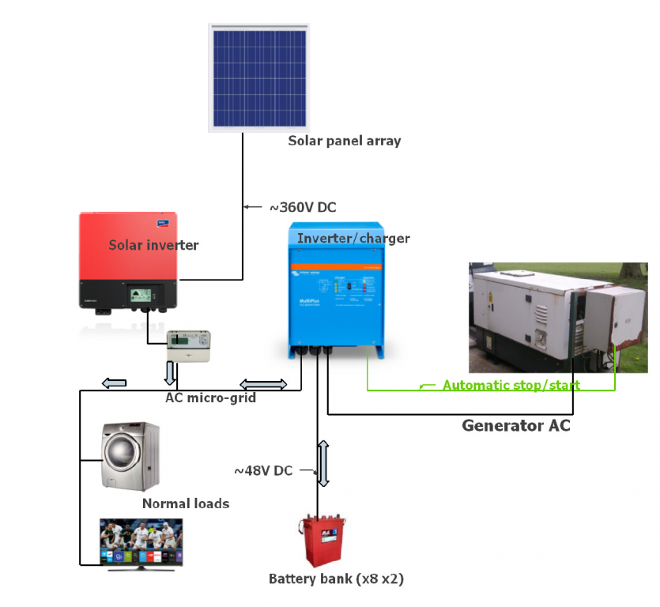
The black lines indicate power flow and the green line indicates control information. Note the double-headed arrows, showing where power may flow in either direction:
If the output from the solar inverter is less than the load (washing machines, lights etc etc), then AC power will flow out of the inverter/charger. Unless the generator happens to be running, the inverter/charger will be extracting this power from the 48V battery bank.
If the output from the solar inverter is greater than the load, then the excess power flows into the inverter/charger and the inverter/charger uses it to charge up the batteries.
When the batteries are being charged in this way, by the excess solar power, then there is no control over the amount of power flowing into the batteries. The solar output is whatever it is, the loads are whatever they are, and the whole of the difference between them is going into the batteries.
This in itself is a bit undesirable: it seems to be generally agreed that the best way of charging lead-acid batteries is to follow a controlled "charging curve", rather than just dumping randomly varying amounts of power onto them. But an even more basic problem is "what happens when the batteries get full?" As the batteries get more and more full, the inverter-charger has to raise the DC voltage in order to ensure that it can still get rid of all the excess AC power that is coming into it. Eventually we will reach the maximum safe voltage for the batteries. If we carry on shoving more power into the batteries - which at this point can't store any more - the batteries themselves will get rid of the excess power by (a) getting warmer and (b) electrolyzing the water to hydrogen and oxygen - "gassing" in other words. Both of these things are highly undesirable: at this point we are not merely wasting power, we are actively damaging the batteries.
In fact what happens is this. If the battery bank voltage rises beyond what is deemed to be a safe level, then the inverter/charger alters the frequency of the AC micro-grid, from the normal 50Hz up to 54Hz. When the solar inverter detects that the mains frequency has increased in this way, it takes it as a signal to turn itself off: to be precise it opens a relay so that it is no longer sending power into the micro-grid. (This is a standard way of signalling to a solar inverter that it needs to stop outputting).
Another thing I need to explain is that in the UK, an off-grid system IS eligible for feed-in tariffs (FITs). Despite their name, FITs are not a payment for feeding in to the grid, they are a payment for production. We have a meter on the output of the solar inverter; it measures all the AC produced from the solar inverter, and we get paid on the readings from that meter. As an early adopter, I am on a rate of about 49p per unit. The only thing we don't get is the "deemed export payment" but that is tiny by comparison.
So if my solar power turns itself off because it has been told to (via the frequency shift) by the inverter/charger signalling that it can't handle the power, then we are losing the 49p per unit that we would get if we use the power. In the absence of something (like immersion heaters) to absorb the extra power, this can lead to substantial losses. On a sunny summer day, the batteries will typically be full by mid-morning and then we would go through a very undesirable oscillation: solar power on, batteries full, battery voltage rises, inverter/charger signals the solar inverter to go off; solar inverter goes off, battery voltage falls, frequency goes back to normal, solar inverter comes on again, and repeat ad infinitum. It is not a rapid oscillation because there are time delays in the switching, but the point is that it leads to a considerable loss of solar production.
Here is an emonCMS screenshot showing the above scenario in action.
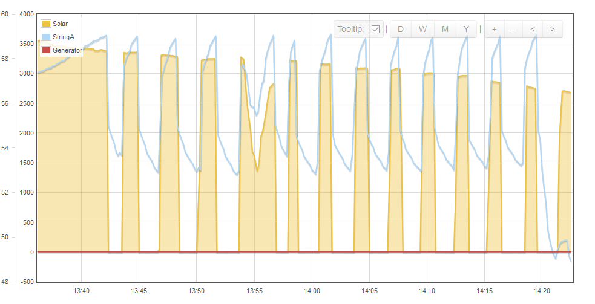
Each time that the solar power switches itself off, it waits about 2 minutes before coming on again. Then the batteries take about 3 minutes to reach maximum voltage again, and the whole cycle repeats.
I do in fact have a system that can switch in immersion heaters in this situation, so I don't suffer this problem. In the last 12 months a total of 1700 units of electricity have gone into my immersion heaters, meaning that I have earned about £830 in FITs which I wouldn't have had if the solar had been switching itself off all the time as shown above. As well as the £830 cash earned I have also benefited by not having to had to provide 1700 kWh of heat energy from other sources (which in my case would probably have come from wood). This also demonstrates why immersion heater diversion is much more important to an off-gridder (on a good rate of FITs) than it it is to someone who is on the National Grid. Someone who is on the grid who diverts a unit of electricity away from being exported and into their immersion heater instead basically benefits by getting a "free" unit of electricity (because exports aren't actually measured) - worth about 12p, say, whereas when I put a unit of electricity into my immersion heaters (when I would be "exporting" to the batteries but they are full) I not only get the free unit of electricity worth 12p but also the FIT payment worth 48p - a total benefit about 5 times that of the on-gridder.
I say all this, no to boast, but just to underline why the issue of immersion heater diversion is so important to anyone in my situation.
My solution to this problem is based around a product called the "PowerReducer" from an Italian company called 4-noks. I have this product and I can say that it definitely works in this application. The reason that I have this particular product was because it was recommended by the original installers of the off-grid system who specifically stated that they had tried other types of power diverter and found that they were incompatible with the off-grid inverter charger (they said they had tried them and had actually been forced to take them out again). They didn't explain the reason for this but I think it is to do with the effect of different technologies on the sine wave of the power.
Here are 3 graphs taken from www.renewableenergyworld.com/articles/2013/09/the-importance-of-pv-immersion-control.html by Zuber Vindhani of 4-noks (it's worth reading the whole thing)
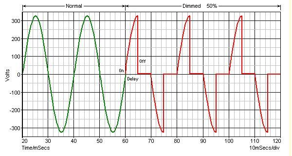
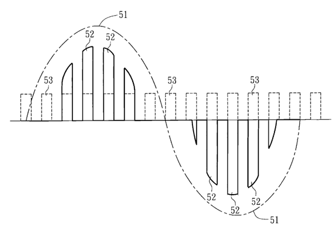
The basic problem that is being addressed is this: you've got a fixed AC voltage, a fixed resistive load (eg immersion heater), and you want to vary the amount of power being taken by the resistive load. The three graphs represent three different ways of solving the problem, respectively named "phase angle (trailing edge dimmer)", "burst fire" and "pulse width modulation". It is this last method that is used by the 4-noks Power Reducer, and they claim that it is superior to the other methods. Zihani says
I think it is the question of harmonics that is crucial in the off-grid system. The National Grid doesn't really care if you pump out a few harmonics - it is huge and your little bit of noise will get lost. In a little one-house micro-grid, on the other hand, these harmonics can represent a substantial portion of the total power. To put it another way, look at this from the point of view of the inverter/charger. The inverter/charger's job is to create a sine wave. However if there is a phase-angle control dimmer in control of a lot of the power, then the inverter/charger has got a real problem: part of each sine wave cycle will be at high power, and the rest of the cycle at much lower power. Things are not much better with burst mode. Say that we have bursts of 3 cycles on, 3 cycles off. Suppose that there is a 200W normal load and a 3kW immersion heater connected through a burst mode controller. Then we are saying to the inverter/charger at one moment "please output 3.2kW", then 0.06 seconds later we are asking it to output 0.2kW, then 0.06 seconds after that we are asking form 3.2kW again and so on. The National Grid doesn't mind if you do that, but it's a lot to ask from a 5kW inverter/charger.
That's the theoretical basis for saying that the Power Reducer will work in an off-grid system, and it seems that practical experience shows that it is indeed so.
There are a few points that are worth noting. Firstly the pulses are much narrower than the above graph would suggest. The technical manual for the Power Reducer says "PWM a 19.2kHz" - that would be 384 pulses per mains cycle. Secondly, I think that as well as just chopping up the sine wave, the Power Reducer has considerable ability to smooth it out again. Below is a picture of the innards of the Power Reducer and at the top of the picture I can see a very big chunky coil at the top centre of the picture. I have no idea how the thing works in detail but I'm guessing that this coil has something to do with smoothing out the dents in the sine wave (in fact, to be precise, I think I'm right in saying that the output from the Power Reducer is very much NOT a sine wave, but the smoothing means that the distortion does not feed back to the input, which is what matters).
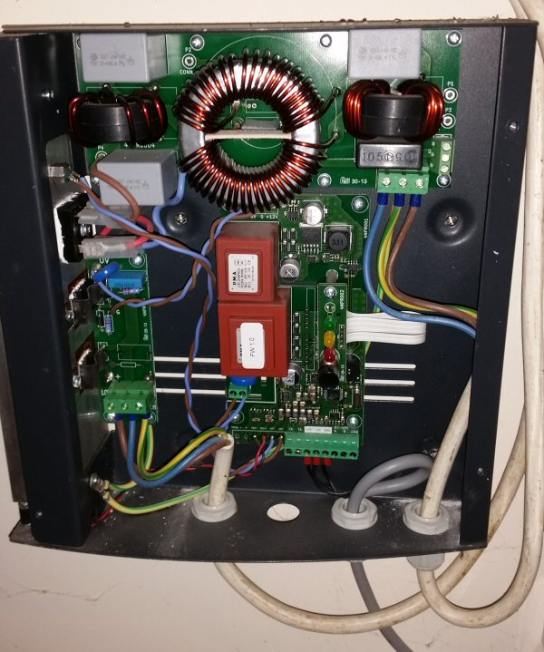
This problem of distorting the sine wave is obviously a well-known problem and the Power Reducer is not the only appliance to address it. For example the well-known ImmerSUN product says
So possibly the ImmerSUN works in the same way as the Power Reducer; perhaps it is superior - I don't know. However the Power Reducer does have on advantage that is crucial for an off-grid situation: it can be controlled by a 0-10V analog input. So send it 10V and it will utilize the full resistive load; feed it 5V and it will output half that power, and so on.
It is this ability to control it via a 0-10V signal which I intend to base my solution around.
There are several different ways in which you can control the Power Reducer (ie tell it how big a pulse width to output at any particular moment).
One option is that you can set up the Power Reducer to get its control information directly from a CT (current transformer) on the house's grid connection. In this set-up the Power Reducer will (if there is excess power that would otherwise be exported) draw just enough power to reduce the export to around zero.
However, there is another option: you can also connect the Power Reducer to a separate external control device. In this scenario the external device tells the Power Reducer how much power to output, via the 0-10V analog input (in the picture above the analog input is the grey cable connected to the green terminal block at the bottom.) For this scenario, the manufacturers of the Power Reducer recommend (or specify) something called the Elios4You. The Elios4You is what I have got at the moment.
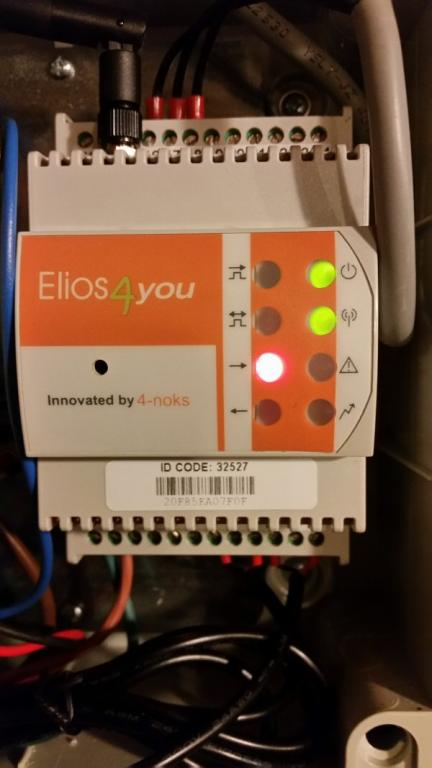
Elios4You is at heart a monitoring device: it uses CTs to measure your solar generation, load, and net power consumption (import or export). It will communicate over your LAN by WiFi and there are Apple and Android apps with cool visuals showing all this data in real time. However, as well as just monitoring and visualization, the Elios4You also has the ability to create the 0-10V analog control voltage that the Power Reducer needs. This is how mine is set up. The Elios4You acts as a PID controller (see en.wikipedia.org/wiki/PID_controller ) - that is to say it has a feedback mechanism which means, basically, that it will continually vary the 0-10V analog signal until it finds the point where your export is zero (assuming that you have got excess power). If the sun comes out or goes in, or if the load from the house changes, the PID controller will rapidly find the stable point.
This is fine in an on-grid situation, but for an off-grid set-up there is a problem: the Elios4You knows nothing about the battery charging. The Elios4You wants to keep the amount of power that is exported to be slightly positive but as small as possible. In the case of an off-grid system this is not what we want: we do want power to be exported to the batteries provided that they are not full - but the Elios4You has no way of knowing about this.
So there is yet another component in the system, to address this problem. This is a bespoke box containing a Schneider Zelio Logic plc running some specially written logic. The Zelio Logic plc does have access to data about the battery voltage (though only in a limited way, as I shall shortly make clear) and it controls a relay that can turn on or off the supply of power coming out of the 4noks Power Reducer. So if (a) the plc thinks the batteries need charging and (b) there is excess solar power, the Zelio Logic plc will open its relay and then the Power Reducer's AC (modulated) output will be open-circuited. In this scenario even though the Elios4You is telling the plc that power is being "exported" and therefore it should be pushing some power out to the immersion heaters, the Power Reducer cannot do so because its output has been disconnected. Consequently, in this scenario, the excess power does flow to the batteries and they charge up.
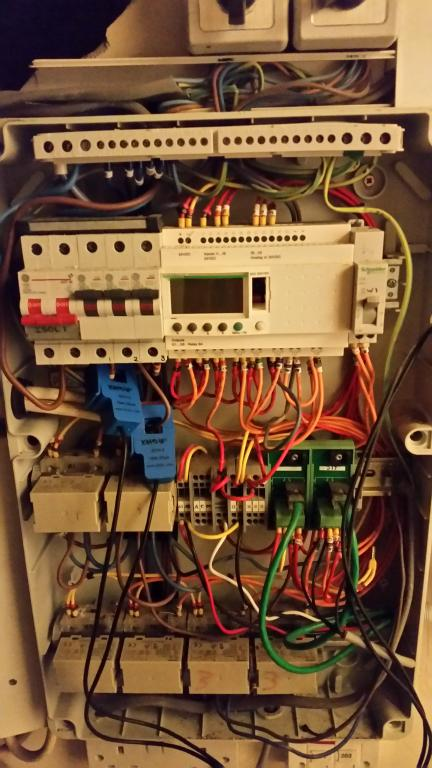
In the above photo, the Zelio Logic plc is the white box with an LCD display. The rest is basically trip switches and relays. The current transformers that measure the output to each of the two immersion heaters (via EmonTX3) can be seen in blue.
That, then, is the system that I have got and it does meet its main objective, ie it means that we never get to the situation where the inverter/charger wants to cut off the solar power because the battery voltage is too high. The plc closes its relay, and the Power Reducer diverts the excess power, before we ever get to that situation. And on sunny days, the batteries do get sort of more or less fully charged before the excess power diversion cuts in.
But there is still a problem with this set-up too. The main issue is that the Schneider plc gets its information about the battery voltage from another device: a Telemecanique RM4UA. This is a voltage-triggered relay: that is to say, it closes when a set voltage is exceeded. There is a little bit of sophistication to this, but not much. The voltage threshold is adjustable, as is the "hysteresis", that is to say, if it closes when the voltage exceeds 58V then it will not open again until the voltage falls below 55V. The difference, 3V, being the hysteresis. However the minimum hysteresis that can be set is 5% of the threshold, so there is quite a big gap (for example if the threshold is set to 58V, then the minimum hysteresis will be 2.9V). There is also an adjustable time delay on the relay either opening or closing, although this seems to be set at zero in my set-up.
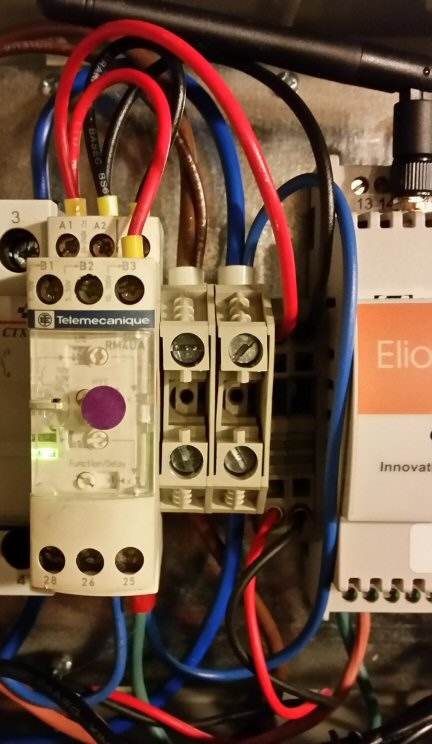
Here is a diagram of the total system, as it exists at the time of writing this post.
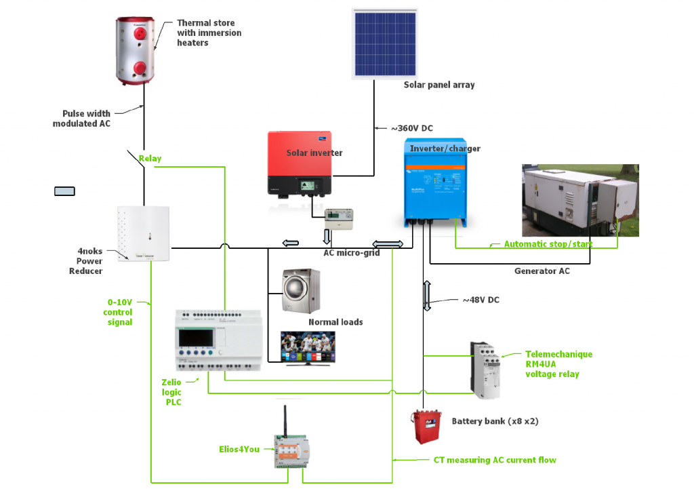
The Zelio Logic plc does not know the actual battery voltage; it only knows whether the RM4UA's relay is open or closed. We may say that as far as the Zelio Logic plc program is concerned, the battery voltage is in one of two states: the voltage is too low; or the voltage is too high.
The consequence of this is that the Zelio Logic plc is always oscillating between switching the power to the Power Reducer on, and switching it off again. The PowerReducer is capable of finding the stable spot where the amount of power flowing to the batteries is just a trickle, but this isn't what we want. What we actually want is for the PowerReducer to find the stable spot where the exact amount of power going to the immersion heaters is just enough to leave enough power over to keep the batteries at 58V. This can't be achieved by the present set-up.
So that is the problem. The present set-up is not only excessively complicated (and it is actually more complicated than I have described; I've only included the essential features) but it doesn't really achieve what I want.
To sum up. What I want is to have the PowerReducer push out just the right amount of power (at any given moment) to the immersion heaters that leaves just enough power flowing to the batteries to keep them at 58V.
My proposed solution is to take out the Zelio Logic plc (and the relay that it controls), take out the Elios4You and take out the RM4UA voltage relay, and build a single new device which would replace all three. This new device would be based on an emonTx. This new device would
(a) know about the battery voltage, not just as a "too low vs too high" binary variable, but as a continuous variable so that it knows how close it is to the required voltage and
(b) know whether the generator is running (via a CT on the generator output)
(c) would directly control the PowerReducer by feeding it a 0-10V control signal.
The device that I have in mind would have the battery voltage as an analog input (stepped down by a voltage divider). It would have a 0-10V analog signal as an output - this output would go to the Power Reducer as its control signal. If the battery voltage exceeds 58V, the device would increase the 0-10V analog output. If the battery voltage goes below 58V, the device would decrease the 0-10V analog output. In this way, it would hunt for and find the precise 0-10V output that would keep the batteries very close indeed to 58V. If conditions change, ie the sun comes out, or someone switches something on or off, then the amount of excess power flowing to the batteries would change, and the voltage would move away from 58V. As soon as that happened, the device would start hunting for the new point where the battery voltage would be 58V again.
I have in mind to create this device from an EmonTxV4 with some extra circuitry to (a) step down the battery voltage to a level where the emonTX can receive it and (b) boost the analog output to the 0-10V range. Obviously it would need modified firmware too.
I shall now go into some detail about my ideas for this proposed system.
The EmonTXv3.4 has 8 analog inputs (numbered A0 thru A7) plus 14 digital IO (input-output) pins, numbered D0 thru D13). The 8 analog inputs can also be used for digital I/O, for which purposes they are numbered D14 through D21 (so A0 = D14, A1= D15 etc)
6 out of the 13 digital IO pins can provide a sort of pseudo-analog output by means of pulse width modulation (PWM). They are D2, D3, D5, D6, D10 and D11.
6 out of the 8 analog inputs are "hard-wired" to specific monitoring inputs, ie A0 is AC voltage, A1 thru A4 are current measurements and A7 is hard-wired to the internal battery.
Therefore in the emonTxV3.4 there are two "spare" analog inputs: A5 and A6. A5 (/D19) is wired to pin 5 of the green terminal block. A6 is wired to pin 8 of the RJ45 socket.
In the standard sketches, pin A5/D19 is used to power on and off a DS18B20 temperature sensor. However, this is purely a function of the firmware; as far as the emonTX hardware is concerned A5/D19 can be used for anything.
Also, in the standard sketches, pin D5 is used for DS18B20 temperature sensor data communications. But again this is purely a function of the firmware; as far as the emonTX hardware is concerned pin D5 can be used for anything.
Here is the information in a table:
This is a simplified and adapted version of the chart at wiki.openenergymonitor.org/index.php/EmonTx_V3.4#Port_Map
I need an unused analog input for the battery bank monitoring and an unused PWM-capable output for the 0-10V control output. The obvious thing is to use analog A6 and digital D3 respectively, and both of these are already connectible to the outside world through the green terminal block and/or the RJ-45 connector. That way I can continue to also use the DS18B20 temperature monitoring function - I don't need to hijack its connections.
For battery bank monitoring, I need to scale down the voltage. The battery bank has a nominal 48V but can go up to 60V while charging. To give a safety margin I'm going to call this 72V. So I need to scale this down to 5V for monitoring purposes. Here's my proposed set-up.
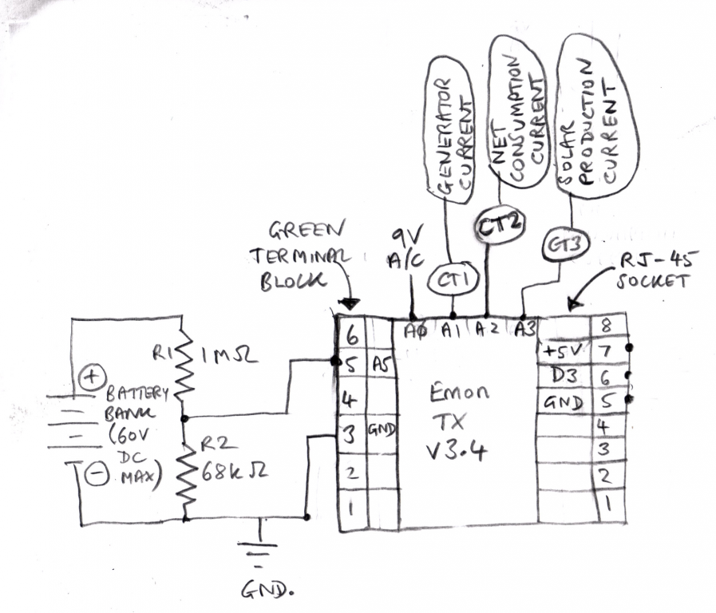
That was the easy bit. Less easy is the output side. The PWM output will produce a pulsed output which spends some of the time at 5V, some of the time at 0V, with the average being the requested percentage of 5V (eg analog write 25% would produce an average of 1.25V).
So the pulsed output signal needs to have two things done to it: (a) it needs to be smoothed and (b) it needs to be doubled, from 0-5V range up to 0-10V range. After much poking about on the internet, I find that the solution to the smoothing is a something called a "low-pass filter" and the solution to doubling the voltage is something called an op-amp.
That's the broad principle, but what values of resistors and capacitors does one need, and which of the many thousand op-amps out there is the right one for this application? As usual, the information is out there on the internet somewhere but the challenge is to filter out the good advice from the rest. After a few more weeks of blundering about, I came across an excellent freeware tool called LT Spice IV, which can be found here: www.linear.com/designtools/software/#LTspice It's a desktop program and I found it very easy to sketch a simple circuit and emulate its behaviour.
Now that I know about SPICE, I see that there are quite a few references to in this site. But it's like a lot of things in life, until I found it I wasn't looking for it because I didn't know I needed it.
Here's one of my sketches using LT Spice IV.
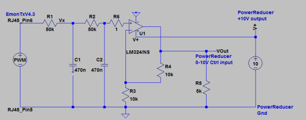
But then I hit a problem with this program. Out of the box, it comes with a "library" of integrated circuits, and (since the program is provided by Linear Technology) it is no surprise that the library only contains devices made by LT themselves. SPICE is a standard, so you can import other manufacturer's devices into the library and I managed to do it for the LM324 as shown above, but I didn't figure out how to do a bulk import of another manufacturer's devices. Looking for op amps on-line in retail quantities, I found that the most popular brands by far were Texas Instruments and Analog Devices. So at this point I have a mis-match: I can design circuits using LT devices, but I can most easily buy TI devices. Not only are the TI devices easier to buy but I found it easier to work out exactly which one I needed using their very powerful selector tool, eg http://www.ti.com/lsds/ti/amplifiers-linear/precision-amplifier-products.page#~p78=In;Out&p1498=Catalog&p2954=PDIP&p1261max=16;16&p480=1;1 returns just 4 results.
So, rather than figure out how to import TI devices into the LT SPICE IV library, it seemed easier to download the equivalent TI SPICE program, which is called TINA-TI. This can be downloaded from www.ti.com/tool/tina-ti (Top tip if downloading this program: you have to register and when you do so, don't put special characters in your password - it doesn't reject them but their server returns a 504 server error! Maybe only certain special characters do it, I don't know, I found this solution by trial and error).
So after finally managing to register with TI, I downloaded the program. Having compared LT SPICE IV with TINA-TI I would say that the LT program is more user-friendly, somewhat more intuitive to use for a beginner, and it produces nice easy-to-see circuit diagrams that look like engineering "blueprints" (eg above). However the TI program is probably more powerful. I'm quite glad that I came across LT-Spice first, because it gave me a chance to get used to the concepts whereas I might have got depressingly bogged down if I had tried to use TINA-TI before I had any experience.
My shortlist of just 4 TI op-amps was based on a number of criteria, including simple things like through-hole mounting but also, importantly "rail-to-rail" operation. Here's my proposed circuit in the TI SPICE tool.
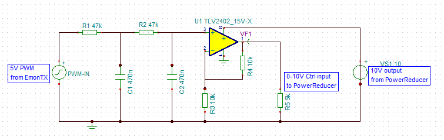
Resistor R5 represents the input impedance of the PowerReducer's 0-10V input (the PowerReducer's manual helpfully gives this figure of 5k ohms). The Op Amp's 10V power supply will actually come from the Power Reducer, I have decided. The Power Reducer has three DC connections: ground, 0-10V control, and +10V. It took me a while to figure it out, but eventually I realised that the +10V connection is actually an output from the PowerReducer, not an input as I had originally assumed. I verified this by connecting the PowerReducer to its AC input only (DC inputs all disconnected) and then measuring the voltage between the ground and +10V connections: it turned out to be a nice steady 10.15V. In the present set-up. Also, the set-up manual for the Elios4You describes the three corresponding terminals as
16: Out 3.3V/In 10V
17: In Dig4 / Out 0-10V
18: Gnd (0-10V)
So the way it works is that the PowerReducer sends the Elios4You a steady +10V and the Elios replies with a signal in the range 0-10V, indicating what proportion of the immersion heater load it wants to be used.
I therefore decided that the neatest thing would be to use this +10V as the Power supply to my Op Amp. Not only does this save having to go out and buy a separate power supply; it also (it seems to me) emulates rather closely the present set-up.
Having made the decision to use the +10V from the PowerReducer as the power supply, a consequence is that I need a "rail to rail" op amp, because I want to output all the way up to +10V. That helps to narrow down the choice of op amps quite a lot, and then my other criteria are "must accept power supply of 10V or greater" and "must have through-hole mounting option". That's how I got it down to a choice of just 4 possible TI models, and then I selected the TLV2402 as shown in the circuit diagram above.
One thing that I haven't mentioned so far is that not all this equipment is in the same place. The battery bank and solar inverter are in an outbuilding, whereas the immersion heaters are in the main house, about 70m away. The 4-noks PowerReducer needs to be near the immersion heaters, not in the outbuilding (if it was in the outbuilding then I would have to run another 70m of mains cable between the two buildings, and it has to be SWA - steel wire armoured - cable which is both expensive and awkward to install).
My plan, therefore is to put the filtering components next to the EmonTx (in the same case if I can fit them in), but have the op amp bits and pieces 70m away in the main house, next to the actual immersion heater.
As I understand it, one of the main things about an op-amp is that it will draw only a very small current from its inputs, while being able to deliver a higher current, if required, at its outputs. So, by putting the op-amp in the main house, we ensure that the 70m of thin wire only has to carry a small current at 0-5V, thus minimizing any worries about voltage drop along this thin wire (I intend to use standard UTP cable which is already in place between the two buildings).
Having built the circuit in TINA-TI, I have run a few simulations. I tried it with a 0% pulse, 50% pulse, 75% pulse, and steady +5V from the EmonTx and here are my results. The first one has a 50% pulse starting after 0.5s.
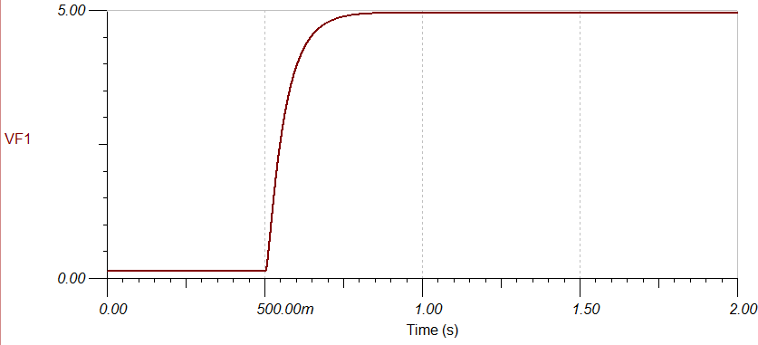
Incidentally, the output while the pulse is 0% is around 130mV rather than exactly zero - I hope that this doesn't cause problems. The good news is that I can't detect the tiniest bit of ripple in this output. The "reaction time" to the change is well within half a second, which I think will be more than adequate for my purposes. Here it is with a 75% pulse (again starting after half a second)
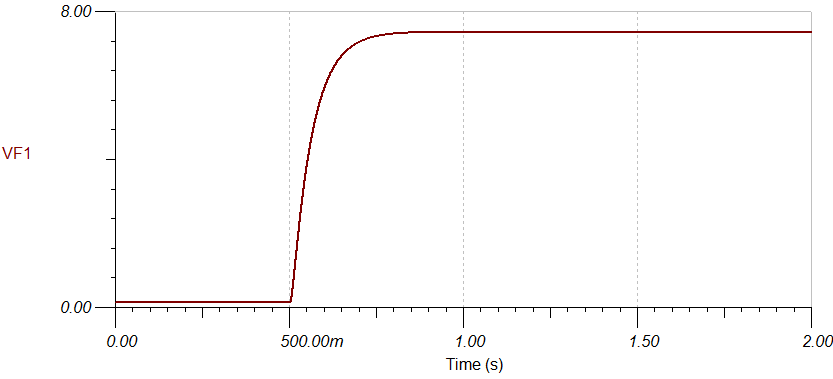
… and finally here it is with 100% output (steady 5V).
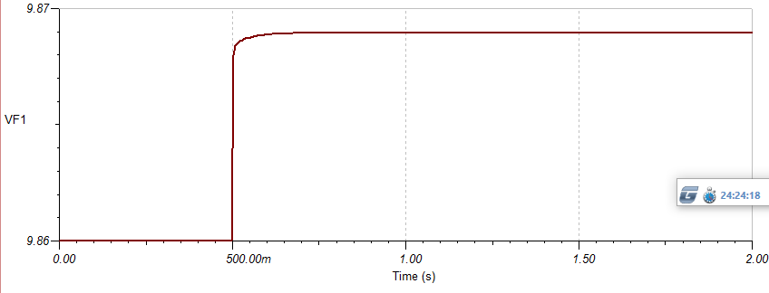
…and the maximum output here is indeed 9.869V.
One problem here is that I tried and failed to work out how much power the op amp would be taking from the 10V power supply.
Looking at my circuit above, TINA is giving me the following current readings (50% pulse, steady state):
all measured in the direction where into the op amp is positive. Surely these should sum to zero? The R5 figure is surely correct (delivering 5V to a 5kohm impedance is around 1mA but where is this 1mA coming from? And surely Op amp pin 3 (input) should be positive current, however small?
On reflection I think I will change my mind about using the +10V from the PowerReducer as the OpAmp's power supply. I think I'll buy an off-the-shelf 12V power supply and use that. I don't understand the electronics well enough and the less I fiddle with the PowerReducer the better. It's an expensive bit of kit and I don't want to ruin it!
One thing I have said almost nothing about is implementing the PID controller in the EmonTx firmware. I'm not so worried about this as I have a maths and computing background so I feel much more confident here than I do with the electronics. One thought I have is that there may well be a bit of a time delay before the battery voltage reacts to any load adjustment. So I'll need to have a fair bit of damping in there to ensure that it doesn't overshoot and oscillate. As long as it converges I don't think it will matter if it takes several seconds over it. I can experiment with this once I've built the thing!
Well that's it for the time being. I wonder if anyone has read this far. I really would be grateful for any feedback, suggestions etc, and I'd be happy to answer any questions that people may have about the setup.
Edit added 4 Mar 2016: if anyone is thinking of following this project and doing something similar, please be aware that I have not described all the safety features of the system. In particular, when sampling the voltages from a battery bank like this, there must be good protection against the consequences of short circuits, as these batteries can pack quite a punch. See in particular this comment and this comment and don't do it unless you really know what you are doing!
Re: Energy diversion in an off-grid system
Thanks for posting all this. I think it deserves not to get buried in the forums so don't be too surprised if it disappears from here.
On the point of "how much power the op amp would be taking from the 10V power supply", the answer is very little. The main current draw is the output current into the load, yes, it comes out of the supply. You know that is not greater than 2 mA (10 V into 5 kΩ). Added to that is the "quiescent current" - the data sheet gives you that, it's 1290 nA (yes, nano) per channel (so × 2, worst case). My bet is that the 10 V output is designed to have a potentiometer connected to it in order to provide the variable input (control) voltage, so I wouldn't hesitate to connect your op-amp circuit to it.
I would hesitate at sending a high impedance signal the 70 m from your emonTx to the op-amp, I strongly suggest you send the PWM switched 5 V signal down the wire and have the filter next to the op-amp, because it'll need much more interference to mess up the signal before filtering than after, and the filter will take a lot of it out anyway, should it get in. If the 130 mV minimum output causes problems, it should be possible to do something about it. Try (in your simulation) connecting a resistor from the 10 V supply to the - input of the op-amp, and see what effect various values have. I'd try a value of about 390 kΩ.
Re: Energy diversion in an off-grid system
There's lots of good stuff in there, and your simplification+improvement project sounds like a fun one. One issue I noticed that might cause you some grief is your resistor divider to monitor the battery voltage. I think it has an equivalent impedance of about about 64k (R1 and R2 in parallel). You really want that to be below 10k in order to get the ADC's sample-n-hold capacitor charged in time. You can see the Amtel datasheet for that 10k requirement, and a bit of a discussion on it (and scope trace) in this thread: http://openenergymonitor.org/emon/node/11011
P.S. I'm blown away that you Brits get paid for generating electricity even when you have no connection to the grid. For us foreigners, you might consider moving that detail closer to the beginning of your excellent write-up, as I was struggling with all the early talk about you not wanting to lose your FiT when you'd declared it was all off-grid. I eventually got as far as "Another thing I need to explain is...." and all was indeed explained.
Re: Energy diversion in an off-grid system
Hello Robert, thank you very much for that. Here is the revised circuit:
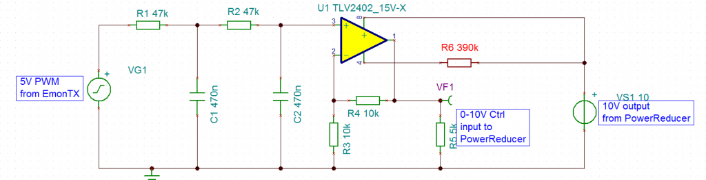
At first I thought that when you said "Try (in your simulation) connecting a resistor from the 10 V supply to the - input of the op-amp" you meant connect the new resistor to the inverting input of the op amp, but that didn't work. Then I figured out that you meant connect it to the negative of its power supply (pin 4 in the diagram): that worked like magic! (Slow on the uptake but all this is still very new to me).
I have tried the circuit with various values as here:
… and the results with 50% pulse are unaffected by inserting R6.
I shall go for the 390kΩ resistor as you suggested. 15.33mV on a scale of 0-10 is 1.533 x 10-3 so if the PowerReducer took this literally it would be driving the 3kW immersion heater at 4.6W, which is obviously not a problem.
I shall also go with your advice and put the filter and the op amp all together, next to the PowerReducer.
I've also found in the PowerReducer manual it actually says that you can connect its +10V output to its 0-10V input and it acts as an "over-ride switch", by which they must mean 100% AC output; here's a snippet taken out of the manual:
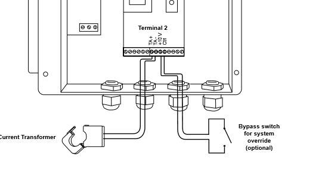
So that gives me even more confidence that the +10V can be used as a power supply.
Your response has given me the confidence to go ahead. I shall now order the parts and report back - it may be a while! Once I've built the electronics I plan to run some simple test sketches in the EmonTx and just output a variety of constant pulse widths and measure the results. I'll do this before I connect it to anything real!
Re: Energy diversion in an off-grid system
"At first I thought that when you said "Try (in your simulation) connecting a resistor from the 10 V supply to the - input of the op-amp" you meant connect the new resistor to the inverting input of the op amp, but that didn't work. Then I figured out that you meant connect it to the negative of its power supply (pin 4 in the diagram): that worked like magic! "
Er, NO! You had it right first time. I really did mean connecting to the inverting input. The object was to form a voltage divider with R3 so that the inverting ( - ) input would sit at 130 mV d.c., the same voltage as the non-inverting ( + ) input, so giving you zero output. [OK, it's a bit of a fudge because it will affect the op-amp gain, but only very, very slightly. So don't do this without understanding exactly what's going on. i.e. simulate it carefully!] I don't know why it didn't work for you, it does for me using a standard op-amp model in LTSpice. But I don't have the TI version of Spice and the particular model for the TLV2402 so I haven't tried it.
What you have now shouldn't work. Just for information, the supply connections are usually called VCC and VDD for a dual rail op-amp, or VCC and GND in your case with a single-rail op-amp.
Re: Energy diversion in an off-grid system
Hi dB
It's interesting about the feed-in tariffs for off-grid: very few people understand this. At www.energysavingtrust.org.uk/domestic/grid you can read
... but I've lost count of the number of newspaper articles that say that FITs are a payment for feeding surplus solar power back into the grid. In fact (as most visitors to this site know but the general public doesn't), even for people on the grid it is actually the case that the less you feed into the grid the more money you make (all other thing being equal) - because they don't actually measure your export, so the less you really export, the better. Unless you are one of those people with a consumption meter that can run backwards (they do exist, I'm told), in which case, keep quiet about it and enjoy. I'm talking about domestic installations here in the UK, not commercial ones, where you will have an actual export meter.
Regarding my voltage divider, I hadn't considered the point you made. I just chose nice big values so as to avoid draining my battery bank unnecessarily. Referring to my pencil sketch at http://openenergymonitor.org/emon/sites/default/files/VoltageDivider.png I could change R1 to 150kΩ and R2 to 10kΩ. That would step 72V down to 4.5V, and considered in parallel it comes to 9.375kΩ which is just under the recommended maximum. The constant battery drain at 60V (which is the maximum value in practice) would then be 22.5mW which is perfectly acceptable.
Looking at http://openenergymonitor.org/emon/node/11011, I wonder how far they got? I notice that it hasn't been updated since August 2015. I have been happily monitoring my 48V battery bank since November 2014 - not just the total but each individual battery - using EmonPi - originally set up with help from here and Mr Robert Wall in particular - there is quite a full write-up at offgriduk.net/2014/12/06/monitoring-the-battery-bank-part-1/ The graphs are very pretty.
That reminds me, when considering the present project (proportional power to the immersion heaters through the PowerReducer) I did spend a lot of time thinking about whether to build it on the Raspberry Pi (where, as just mentioned, I am already reading the battery data) or whether to build it on the EmonTx. In the end I think my logic was this: what I am building here is a machine that will sit there day after day doing just one job. It's an embedded thing: that's what Arduino's are for; whereas the Raspberry Pi is a general purpose computer.
Re: Energy diversion in an off-grid system
Robert....I thought I had replied to your latest but it hasn't appeared, so I probably forgot to press "Save". Apologies in advance if the following turns out to be a duplicate.
Anyway, following that clarification, I tried the following circuit in TINA-TI
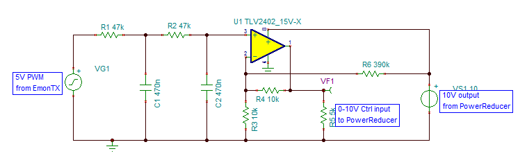
but no matter what values I used for R6, I couldn't get rid of that annoying output voltage when the input was zero.
Here are the results with various values
I also tried varying R3/R4 but that had no effect either.
After staring at this for a while, I decided to try a different op-amp from my shortlist of 4: the TLV2371. Immediately the above problem disappeared!
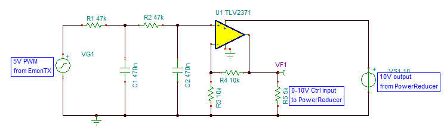Here are the results with the above circuit
... so (unless I get further comments) that is the circuit that I shall go with, and no need for R6.
As to why my earlier circuit based on a misunderstanding did "appear" to work, I did read somewhere that modelling an op-amp is quite hard to do exactly so they typically take some short-cuts which will produce totally realistic results if you use the op-amp in the way that it was intended to be used, but which may produce untrue results if you do something silly. Perhaps that's what happened. As to why the TLV2402 had the problem hitting zero output whereas the TLV2371 did not - I'll have to file that one under "unexplained" for the time being. The pragmatic thing is to proceed withe the TLV2371. In any case I'll be testing it in isolation before I connect it to anything else.
Re: Energy diversion in an off-grid system
Yes, it's a less well-known fact that simulations don't always give the absolute truth, you only know that when you have the real device in operation. Nevertheless, they are a useful and important tool.
It is quite common to have an offset in an op. amp., if the manufacturer thinks it might be a problem, and they can afford the pins, they'll give you a pair of pins to use in an 'offset null' circuit.
Re: Energy diversion in an off-grid system
there is quite a full write-up at offgriduk.net/2014/12/06/monitoring-the-battery-bank-part-1/
You're potentially exposed to the same input source impedance issue there too. If I'm reading it all correctly your source impedance there is about 6.6k and is is predominantly determined by those Rs to GND on your RPi shield. Hopefully your shield designer did the research and determined that was low enough, although the excerpt from the Microchip datasheet below is a little troubling.
If you want to test it you can do a similar test to the one I did in the thread referenced above. The exact symptoms you get will depend on the internal design of the ADC. Some of them leave the sample-n-hold cap pretty much undisturbed during the conversion, others appear to discharge them at the end. So you might need to experiment to determine the worst case sampling-sequence scenario for yours. So start by driving it with a ridiculously high input impedance to make sure you can see the problem (although that would involve changing the Rs on your RPi shield).
For the Atmel ADCs, the worst case scenario appears to be to sample one pin at Vcc and then immediately sample another pin at GND. If it doesn't read 0 then you're probably not driving it hard enough (and if you keep sampling that second pin, you should see it decay down to 0). If your ADC discharges the cap at the end of the conversion then the sequence described here won't prove anything, but reversing the sampling order (GND first then Vcc) should.
Your ADC datasheet gives the size of the cap (3.2pF) and specifies the input impedance (as a function of gain) but I couldn't work out exactly how long the sampling switch is closed for (possibly one clock?). ADC specify all of that (the sampling switch is closed for 1.5 ADC clocks on the Atmel) and conclude with a nice guideline along the lines of "keep your source impedance below 10K and you'll be fine". The closest I could find to that guideline in your datasheet is far more pessimistic:
The conversion accuracy can be affected by the input signal source impedance when any external circuit is connected to the input pins. The source impedance adds to the internal impedance and directly affects the time required to charge the internal sampling capacitor. Therefore, a large input source impedance connected to the input pins can degrade the system performance, such as offset, gain, and Integral Non-Linearity (INL) errors. Ideally, the input source impedance should be zero. This can be achievable by using an operational amplifier with a closed-loop output impedance of tens of ohms
Re: Energy diversion in an off-grid system
Thanks db, that's interesting. However I think it's in danger of taking me away from my present project! For my purposes, the point of the 2014 RPi-ADC-based project is to be able to produce graphs like this:
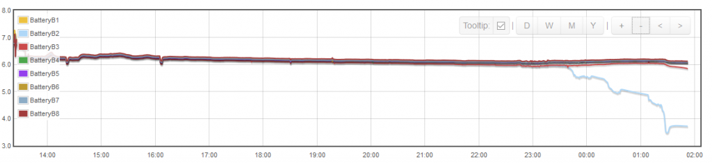
telling me that battery B2 has a tendency to always "collapse" first, and for this purpose it already does the job perfectly. However, I always like adding to my education, and I can see that this voltage-monitoring malarkey is not quite as simple as I naively imagined.
I'll probably go quiet for a bit now and come back when I've put the new circuit together and done some tests.
Re: Energy diversion in an off-grid system
no matter what values I used for R6, I couldn't get rid of that annoying output voltage when the input was zero.
Providing that the control system is linear, I doubt whether this small amount of residual offset will have any noticeable effect. The control mechanism will soon find the equilibrium point where everything balances. Any suitable looking op-amp should be OK for this application.
An interesting project and nicely presented.
Re: Energy diversion in an off-grid system
- famous last words.
I have another part to this project! Here's the problem. My peak solar output is slightly in excess of 4kW. The maximum that the PowerReducer can handle is 3kW. So I could be left with up to 1kW of "excess power" even after the present project is working. On sunny days (can't wait for them) this WILL happen
My proposed solution is this:
In fact (not previously mentioned) I have two immersion heaters (in one tank). They are 1.9kW and 2.8kW (at 230V). My idea is that the 2.8kW one will be controlled by the PowerReducer as previously described, so that its output can be set to any level from 0 to 2.8kW. The 1.9kW one will be controlled by a relay, so that it is either on or off.
When the level of power being got rid off rises above 2.2kW (79% on the proportional control scale), the system will switch in the 1.9kW heater by relay, and adjust the "proportional control" on the 2.8kW heater to soak up the rest. If the level of power being got rid of then falls below 2.0kW, the system will switch off the 1.9kW heater and leave the 2.8kW heater to do the whole job through the proportional control. The gap between the 2.2kW switch-on point and the 2.0kW switch-off point is designed to stop the relay "flapping".
So I need a relay that can be driven by the EmonTx and can switch 1.9kW AC.
I have found this device: Crydom DR2260D30U. It is a DIN-rail mountable solid state relay that can handle 30A on the AC side. It is not cheap but I'm only ever going to buy just the one. The data sheet at http://www.mouser.com/ds/2/93/Crydom_DR22_AC_series_DSL-793185.pdf suggests that it can be switched on by 5V DC and will draw 10-15mA control current. From my reading, that's well within the limit of an Arduino digital output. Can I wire it straight to an output from the EmonTx or do I need something in between?
I plan to put the whole thing in a mains-safe, childproof etc enclosure so DIN rail mounting should be fine. I would then also add a trip-switch and an isolator.
Re: Energy diversion in an off-grid system
The principle is sound, but unfortunately I don't think that will work with an emonTx, though it will with an Arduino. The data sheet says "Minimum Turn-On Voltage" is 4 V d.c., and you might get only 2.6 V from an emonTx with its 3.3 V supply voltage, when you pull some current (the data sheet says 2.3 V out at 10 mA with a 3 V supply [page 313, VOH]). It might work, but it's not guaranteed. I'd suggest you need a single transistor driver, run from whatever higher d.c. voltage is handy.
Re: Energy diversion in an off-grid system
When not using a triac, which works fine at 3.3V, I use this Crydom 2425 relay. Although nominally controllable down to 3V, it works more relably when driven from a 5V system as I've done here:
http://mk2pvrouter.co.uk/media/3284daa3b50b62f3ffff8018d4355564.JPG
(the step-down stage for the 3.3V RFM12B is at the upper-right of the PCB)
Re: Energy diversion in an off-grid system
I agree that if there is an equilibrium point, then the residual offset is irrelevant. The problem comes when we can't reach the equilibrium point because there isn't one (i.e. when there is no excess power, in fact there is a shortage). Then we want the immersion heater to be taking zero power. So I send a constant 0V from the PWM but (apparently, according to the simulation, if I'd carried on using the TLV2402) get 130mV out of my circuit. A voltage of 130mV would correspond to about 40W of output power (on a scale of 0-10V, controlling a 3kW immersion). I don't want 40W going into the immersion heater constantly (our background consumption, e.g. overnight, when only the "always-on" appliances are on is around 180W so 40W would be a big increase).
[One becomes very aware of energy consumption in our situation. I've just replaced all our 11W CFL bulbs with 3W LEDs.]
Re: Energy diversion in an off-grid system
Following the very helpful feedback, I'm going to be using a ULN2003A Darlington array to drive the relay. The relay will be a Crydom CKRD2420, which I think is roughly the DIN-rail equivalent of the 2425.
The parts are on their way.
Re: Energy diversion in an off-grid system
As I wrote earlier, if you have an offset problem with the op.amp, and in the absence of an offset null input, then you should be able to solve the problem by injecting a small voltage into one or the other input of the op-amp.
Re: Energy diversion in an off-grid system
I don't want 40W going into the immersion heater constantly (our background consumption, e.g. overnight, when only the "always-on" appliances are on is around 180W so 40W would be a big increase).
When surplus power ceases, there needs to be some way of ensuring that the dump-load is fully off. Maybe you could use a spare IO port to suppress any residual control signal.
Re: Energy diversion in an off-grid system
By changing from the op amp from TLV2402 to TLV2371 (as per #comment-39553 above), I consider that I have solved the "residual voltage problem" (at least that's what the simulations are telling me).
so it doesn't seem to me that I need any offset voltages or other ways of turning it off even more completely. 0.6W is as good as zero, and it may well be that 1.92mV is below the PowerReducer's threshold anyway.
At least that's the theory. I have to beware of trying to sound too much like an expert as I hadn't even heard of an op amp until a month or two ago.
Anyway, once the parts arrive I shall put it together and try and compare theory against the reality.
Re: Energy diversion in an off-grid system
I have now got all the parts, and have started to put it together, breadboard-fashion inititally.
In the course of this, I have discovered a couple of little errors or out-of-dateness in the documentation.
At https://wiki.openenergymonitor.org/index.php/EmonTx_V3.4#emonTx_V3.4_2
there is a diagram of the board. At the bottom left is the terminal block with 6 connections. Connection no. 4 is labelled "IRQ1 Dig2". But on my emonTxV3.4 delivered yesterday, this one is labelled on the PCB "Dig 3 IRQ1" and I believe that this is correct (Dig3 rather than Dig2).
A slightly bigger problem (for me) is the information about the RJ-45 connector. On page https://wiki.openenergymonitor.org/index.php/EmonTx_V3.4 again, there is the statement "The emonTx V3.4 uses a standard RJ45 DS18B20 pin-out as used by Sheepwalk Electronics and others" followed by a pin-out diagram showing that pins 1, 3 and 5 are all GND. In reality (ie on my brand-new emonTxV3.4) only pin 5 is GND. I found this out the hard way, ie when I could not figure out why my little test program would not work (I had been using pin 1 as the GND). Then eventually, a bit further down the page I found more info on the connections, where, against connections 1 and 3 it states "N/C in future" in small print - I guess the future has arrived. NB If someone else can confirm that I have correctly identified these discrepancies, then I'll happily update the wiki page.
This just shows the benefit of "test-driven development", ie get a little bit of it working, then build a bit more and test that and so on. So far I have a sketch that basically alternates between analogWrite(3,200) for 20 seconds and then analogWrite(3,255) for 20 seconds. I am now able to extract this signal via the emonTx4.3's RJ-45 connector (pins 5 and 6), feed it through my 2-step low-pass filter, and see the resultant voltage switch between a steady 2.547V and a steady 3.248V. The next stage will be to add the op amp.
The only surprise to me is that I was expecting 5V rather than 3.248V. But that's obviously a misunderstanding on my part - I think I have been reading Arduino documentation as if it could be applied unchanged to the emonTx. That's fine, anyway, it just means that my op amp stage will have to be configured to deliver x3 voltage multiplication rather than x2.
Re: Energy diversion in an off-grid system
"The only surprise to me is that I was expecting 5V rather than 3.248V"
Sorry, I should have spotted that. The emonTx works on 3.3 V, so you'll never get 5 V out of it.
My V3.4 PCB is dated Oct 2014 and is an early one, the silk screen is "IRQ1 Dig 2" on the top and "Dig3 IRQ1" on the bottom against Pin 4. The circuit diagram and pcb layout both show D3 / IRQ0 and it definitely responds as Dig 3.
Re: Energy diversion in an off-grid system
"The emonTx works on 3.3 V". When I come to doing the input voltage measurement, I am planning to feed it into analog port A5 (pin 5 of the terminal block). Therefore this must be maximum 3.3V too, I'm thinking - is that right?
Re: Energy diversion in an off-grid system
This is my second electronics project, and when I look back on the first one, the thing that I am least satisfied about is the final packaging. How do you get a Raspberry Pi, with a mini-tower of add-on boards, plus a USB HDD, plus a USB hub, plus a home-made stripboard circuit with three RJ-45 sockets, all into a really neat box that doesn't rattle when you shake it? I think I spent a surprising amount of the cost on packaging and still wasn't really happy with the result.
Looking around on the internet, I see a lot of projects where someone has done something clever with the electronics and then stuffed it all rather messily into a plastic sandwich box.
I think I can do better this time. I think the emonTx packaging is really neat and I see that one can buy similar cases off-the-shelf. But then I figured out that I can squeeze my voltage divider into the existing emonTx case, ie have a second floor within the same case. (I am talking about the voltage divider which will scale the [up to] 60V from my battery bank down to 3.3V(?) for the emonTx ADC input).
Firstly, I removed the battery holder from the emonTx (sorry, but I don't plan to ever use it). It is held in place solely by its two electrical connections, and it wasn't too hard to unsolder these and judiciously lever it off. Then I treated my junior hacksaw to a new blade and sculpted a bit of stripboard of the correct width (100mm) so as to fit round the RJ-45 socket. This then fits into the top groove of the emonTx case. All should be clear from the following pictures.
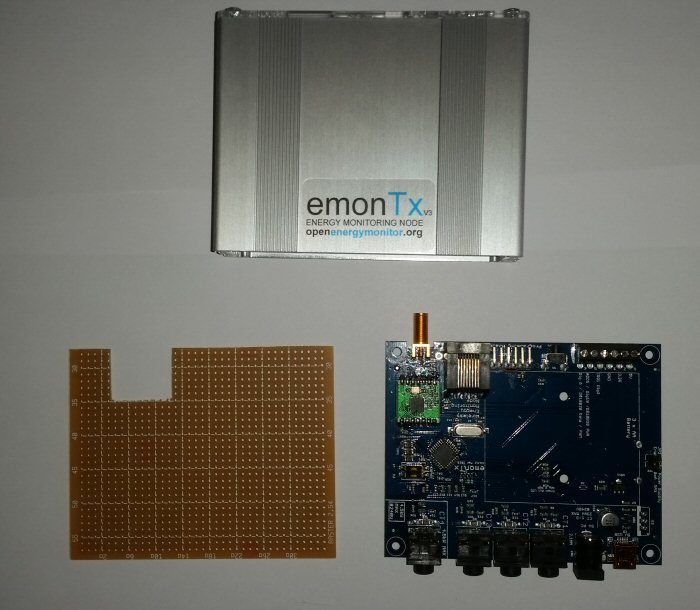
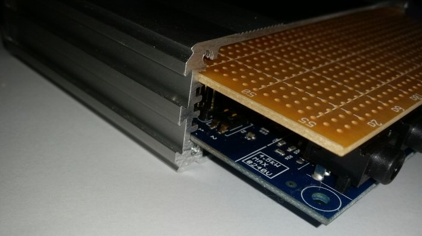
As far as I can see there is enough headroom in both directions. I have smoothed the cut edges with a file and will have to check and test that I haven't bridged any strips by my hacksawing.
What's more there are even some helpful holes in the PCB for the six terminal block connections. So I will be able to join my voltage divider to the main PCB entirely within the case. The only thing I haven't got room for is a socket to bring in the 60 or so volts from the battery bank. So I plan to have a dangling plug for this, which will be soldered to my stripboard. But actually, now that I think about it, a dangling plug is better than a socket. (There's a reason why our walls have sockets and our appliances have plugs, rather than the other way round!)
I think I'll build this bit next, so that I can test my ability to read the analog voltage.
Re: Energy diversion in an off-grid system
"Therefore this [input voltage] must be maximum 3.3V too, I'm thinking - is that right?"
Indeed. Generally, if you can't derive the input from the 3.3 V supply, then you need to clamp it and current-limit it so that the inbuilt protection is not overloaded. In your case, provided the battery never gets disconnected and so the voltage coming down never exceeds the voltage that you design for, all should be OK. The pertinent question is, what if the PV output isn't held down by the battery?
"The only thing I haven't got room for is a socket to bring in the 60 or so volts from the battery bank."
And remember that batteries can lash out with a lot of current, so you need at least a low-value fuse at the battery to protect the cable and your connections. You could split the voltage divider - have the 'top' half local to the battery and the 'bottom' (earthy) half in your box, that would inherently limit any fault current to a few mA.
Re: Energy diversion in an off-grid system
Thanks for your response.
In my original post in this thread where I described the current system, I did not include all the safety features etc: It seemed to be quite a long post so I did leave out a certain amount of detail of things that don't affect the overall concept.
My existing voltage sampling works on a separate circuit from the main power handling. The photo below shows the connections at one of the battery terminals.
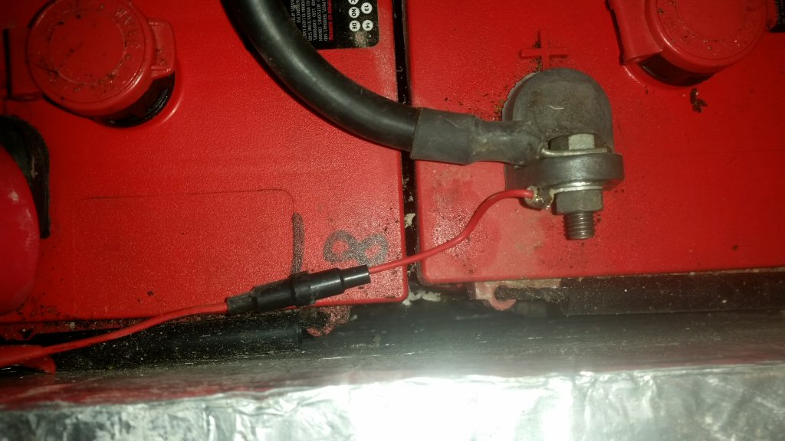
The thick black cable takes the power into the inverter/charger (up to 120A). The small red wire is for the voltage sampling. The black cartridge in the red wire is an in-line fuse holder containing a 500mA "quick blow" glass fuse. There are 17 of these fuses altogether; one on the positive of each battery and another one in the return cable at the negative end of the strings. I did actually blow these fuses once, while I was developing my Raspberry Pi-based battery monitoring system, by absent-mindedly short-circuiting across several batteries. The glass fuses all blew and everything else carried on as normal, thus demonstrating both that they were necessary, and also that they worked! All the current for the new sampling system will flow through one of these fuses - from the positive end of the string - (and back through the earth one).
Another thing not previously mentioned is that there is already another device in the system to protect against over-voltage of the batteries. In my original post I described how the inverter/charger can turn the solar power off by altering the mains frequency. The following screenshot shows the actual parameter settings in the inverter/charger:
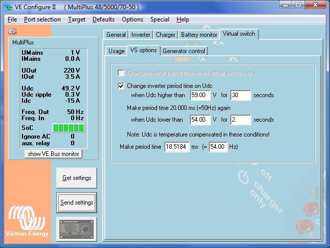
… meaning that the frequency will change to 54.00Hz if the battery voltage goes higher than 59V for 30 seconds. As soon as the solar inverter detects the 54Hz it will isolate itself from the system. There will then be no "surplus power" flowing into the batteries and the battery string voltage will drop back.
However, there is a serious flaw in this idea. It will not work when the generator is running. When the generator is not running, the inverter/charger is in full charge of the voltage, frequency, and phase of the micro-grid. However, when the generator is running, it is the generator that is in control. In particular, the frequency is equal to the rotational speed of the diesel engine (which runs at a fixed speed): 3000rpm = 50Hz - in the US they have to run them at 3600rpm. (And when the generator comes on, incidentally, you get random phase-jump, but this is harmless). So you can get a scenario where the generator is running and the sun comes out. Excess power washes into the inverter/generator's output, which now can do nothing about it, because it can't change the frequency. Dangerous battery over-voltage may result.
I pointed out this flaw to the original installers, who came round fairly pronto and installed an additional voltage-driven relay, which just electro-mechanically isolates the solar input if the battery voltage exceeds a bit over 59V.
In fact, when I said in the original post, that this graph
… shows the frequency shift mechanism in operation, I think on reflection that what we are seeing there is actually the voltage-relay cutting in, because that happens immediately, whereas the frequency shift is currently set to wait for 30 seconds.
So the bottom line is that the battery voltage cannot go above 60V or so. In my voltage divider, I intend to have a bit of a safety margin and scale 72V to 3.3V. Safety mechanisms can go wrong, I suppose, but the way I look at it is that if the battery string voltage goes above 72V then we have got bigger problems than just burning out an emonTx.
I have now started thinking about "input impedance" for the voltage sampling. After a bit of reading and a bit of algebra, I think I understand the concept. In the following voltage divider circuit:
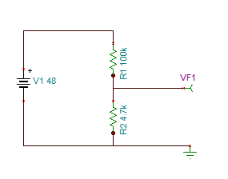
(which are the actual values I intend to use) I think I am right in saying that the "input impedance" of this circuit is exactly equal to R1 (plus any internal impedance of the batteries) and does not depend on R2 at all. The voltage at VF1 will obviously depend on the ratio of R1 to R2 but the input impedance itself is independent of R2. Having worked this out laboriously by algebra I think I can now see it more intuitively: that if you want to draw a current from VF1 to ground, that current has got to be pulled through R1 (and the batteries) but not through R2. The fact that you are simultaneously leaking some of the battery power to ground through R2 is neither here nor there.
If the above is correct, then I have begun to understand the concept of input impedance. If not, then not, and I look forward to being corrected!
Having got that out of the way, there seems to be a variety of opinion on what is the maximum reasonable input impedance. I have seen a suggested figure of 10kΩ, but if I put R1=10kΩ, R2=0.47kΩ then I am using about 344mW (at 60V) which seems to me to be a bit on the high side (it is about the maximum power of any of the resistors in my possession).
I have also seen it suggested that you can go much higher than 10kΩ if you are prepared to allow more "settling time" and that this can be simply done by doing the same analogRead twice in succession and just using the second value. See http://forum.arduino.cc/index.php?topic=99170.0 for example. In fact that is what I think I will try.
Re: Energy diversion in an off-grid system
I wouldn't have any concerns wih those resistor values, they look sensible to me.
But I'm afraid your concept of impedance (or more strictly resistance in this case because there are no reactive components) isn't quite right. The input impedance is actually R1 PLUS (R2 in parallel with whatever is off to the right). So it will be between 100 kΩ and 104.7 kΩ (100 with a dead short off the page, 104.7 with nothing connected). So what in fact you had was the resistance that would limit the fault current given a short circuit off the page to the right.
Looking back from the right-hand side, your circuit has a source impedance of 4.7 kΩ in parallel with (100 kΩ plus the battery internal resistance), so in practical terms 4.7 kΩ. And that's fine for feeding into the ADC. So it's equivalent to a 2.154 V battery in series with a 4.489 kΩ resistor. (It's Thévenin's Theorem, but I guess you've read that by now).
I hope you don't mind me mentioning these safety considerations, but somebody following this who doesn't understand the implications could get into serious trouble if they didn't understand the dangers.
Re: Energy diversion in an off-grid system
Where have I been for the last 4 days? Learning about Thévenin's Theorem (and the Norton equivalent), and I now think that I really do understand the concept of source impedance.
That's the trouble with being self-taught; one's knowledge is so erratic. I wish they had done this sort of thing when I was at school. Never too late to learn, though!
I don't in the least mind you mentioning the safety precautions. In fact I will re-edit the earlier posts to flag them up. Another really good safety precaution (again not previously mentioned) is battery terminal covers, as shown in this photo.
I shall be back on the project soon.
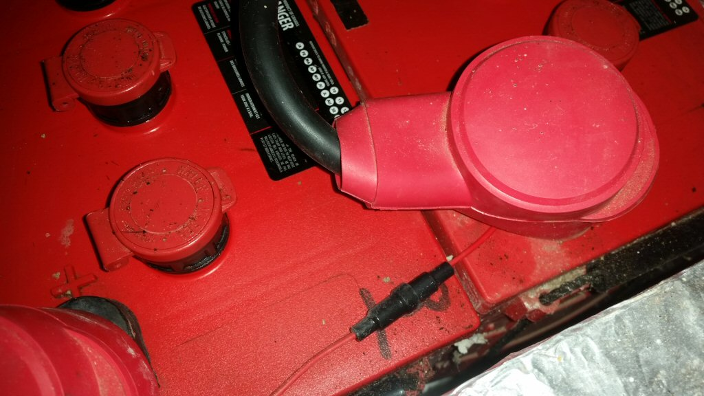
They were surprisingly hard to source - ie finding ones with the right size and cable entry (and the supplier I got them from doesn't seem to stock them any more).
Re: Energy diversion in an off-grid system
PS in learning about Thévenin's theorem, I found this resource: http://www.facstaff.bucknell.edu/mastascu/elessonshtml/source/source2.html There may be better out there, but this one seemed to be just at my level, and I liked the tests.
Re: Energy diversion in an off-grid system
Hmm. I don't think much of a teaching website that can't use the correct symbol for the units of resistance. It's not hard, all they need is the HTML entity Ω and Hey Presto, Ω appears.
Re: Energy diversion in an off-grid system
I have made some progress with this project but now I am stuck and would appreciate any suggestions.
The immediate problem is that I am trying to get an on/off signal at terminal 8 of the RJ-45 connector of the emonTxV3.4 and I can't get it to work. All the documentation suggests that I should be able to get a signal here by writing to Dig20 as an output.
I have got a basic test circuit consisting of a red LED in series with an 330 Ω resistor. I am using terminal 5 of the RJ-45 as the ground. Here are the results of my tests
I have checked and re-checked everything and tested for continuity and I don't know what else to try. Specifically I have measured the resistance between pin 8 of the RJ-45 socket on the emonTx and the positive leg of the LED and I see 331Ω which is the value of the resistor in the test circuit.
Going back a bit, the overall objective is to be able to (1) read a battery voltage (2) control one immersion heater via an analog signal and (3) control a second immersion heater via an on/off signal. I therefore need one channel with digitalRead ability, one channel with analogWrite ability, and one channel with digitalWrite capability.
I have analyzed what "spare" channels are connected to the outside world on the emonTxV3.4, and I have come to the conclusion that there are only really 3 such spare channels. The following table shows 4 channels:
… but then I read in the small print "DIO 19 / A5 & DIO 5 are linked by a 4.7 kΩ resistor R27". This is presumably something to do with their use for OneWire connections, but for my purposes I think it means that I cannot treat them as two independent channels, so that reduces my total to 3. My plan therefore is this
I have already verified that I can read the battery voltages (via voltage divider) on ADC5 with analogRead. And analog output on D3 is working fine.
Basically it is just the digitalWrite to channel 20 that appears to not be working, and this is where I am stuck.
Here is my complete test program.
#include <Ports.h> const byte LEDpin = 6; const byte PWMPin1 = 3; const byte PWMPin2 = 5; const byte DigPin = 20; const byte ProgramVersion = 5; void setup() { pinMode(LEDpin, OUTPUT); pinMode(PWMPin1, OUTPUT); pinMode(PWMPin2, OUTPUT); pinMode(DigPin, OUTPUT); //Blink to show the version of the program for (int i=0; i<ProgramVersion; i++) { digitalWrite(LEDpin, HIGH); delay(200); digitalWrite(LEDpin, LOW); delay(300); } } void loop() { delay (2000); digitalWrite(DigPin, HIGH); digitalWrite(LEDpin, HIGH); analogWrite(PWMPin1, 64); analogWrite(PWMPin2, 64); delay(2000); analogWrite(PWMPin1, 255); analogWrite(PWMPin2, 0); delay (2000); digitalWrite(DigPin, LOW); digitalWrite(LEDpin, LOW); analogWrite(PWMPin1, 0); analogWrite(PWMPin2, 255); }Am I making some elementary mistake? Or is something broken? If it's not going to work like this is there another way of achieving the same thing?
Re: Energy diversion in an off-grid system
Maybe it should be port 19 rather than 20. The lowest numbered port is 0 rather than 1, and there only 20 in total.
Re: Energy diversion in an off-grid system
It seems that you cannot use ADC 6 as a digital output. Section 23.9.5 (DIDR0 – Digital Input Disable Register 0) of the data sheet does not show ADC 6 & 7 on the bit map and says "Note that ADC pins ADC7 and ADC6 do not have digital input [my emphasis] buffers, and therefore do not require Digital Input Disable bits." Additionally, on the pin-out diagram for the 32 MLF package, ADC 6 & 7 do not belong to any port, and that indicates to me (by that omission) that there isn't a port register where you can set and use it as a digital output, or indeed anything other than an analogue input.
I'm open to correction on any of this.
Re: Energy diversion in an off-grid system
Regarding the numbering, I'm going by I am going by the table at https://wiki.openenergymonitor.org/index.php/EmonTx_V3.4#emonTx_V3.4_2 which shows ports numbered D0 thru D21 (making 22 in all) and I'm writing (or rather, attempting to write) to D20 (which is the 21st port if you count the first as 1).
Now that I look more closely at that table, I see that in the column headed "ATmega328 port", D20 and D21 have blanks whereas all the other ports have a value in this column, which seems to fit in with Robert Wall's explanation.
That would have taken me a long time to figure out on my own.
So, if D20/A6 is in fact only capable of being used as an analog input, then I'll have to use this one to do my battery voltage monitoring. That is a slight shame because I'd been hoping to use the terminal block for the battery monitoring and the RJ-45 socket for the immersion heater control - purely because of the convenience in connecting up. But never mind, at least it's not because something's broken, and at least I'm not stuck any more.
So the revised plan is to do this:
I shall now repeat the tests to make sure that this plan is workable.
Re: Energy diversion in an off-grid system
OK, the latest plan as per previous post, is now working, ie I can do analogRead on channel A6 via the RJ-45 connection # 8, while simultaneously writing to D3 (PWM) on terminal block #4 and writing to D5 (on-off) on terminal block #6.
Here is the complete test program.
#include <Ports.h> const byte LED = 6; const byte PWMImmersion = 3; // terminal block connection #4 const byte DigImmersion = 5; // terminal block connection #6 const byte AnalogBV = 6; // analog input 6 = D20 = RJ-45 connection #8 int int1023Voltage; // battery voltage on a scale of 0 - 1023 const byte ProgramVersion = 6; void setup() { pinMode(LED, OUTPUT); pinMode(PWMImmersion, OUTPUT); pinMode(DigImmersion, OUTPUT); Serial.begin(9600); //Blink to show the version of the program for (int i=0; i<ProgramVersion; i++) { digitalWrite(LED, HIGH); delay(200); digitalWrite(LED, LOW); delay(300); } } void loop() { int1023Voltage = analogRead (AnalogBV); Serial.print("Voltage out of 1023: "); Serial.println(int1023Voltage); Serial.print("Voltage in volts: "); Serial.println(3.3 * int1023Voltage / 1023); delay (2000); digitalWrite(DigImmersion, HIGH); digitalWrite(LED, HIGH); analogWrite(PWMImmersion, 64); delay(2000); analogWrite(PWMImmersion, 255); delay (2000); digitalWrite(DigImmersion, LOW); digitalWrite(LED, LOW); analogWrite(PWMImmersion, 0); }... and the measured voltage is correct to 1% or less.
The next step is to use the Darlington array IC (ULN2003A to drive the relay (Crydom CKRD2420) - again just on a test basis. I shall rig up a light bulb or something to test the mains switching.
Re: Energy diversion in an off-grid system
It will probably be best to get the zero voltage switching version of the Crydom CKRD2420.
Re: Energy diversion in an off-grid system
I have now got the thing to control a 230 V / 11 W lightbulb. Here is a photo:
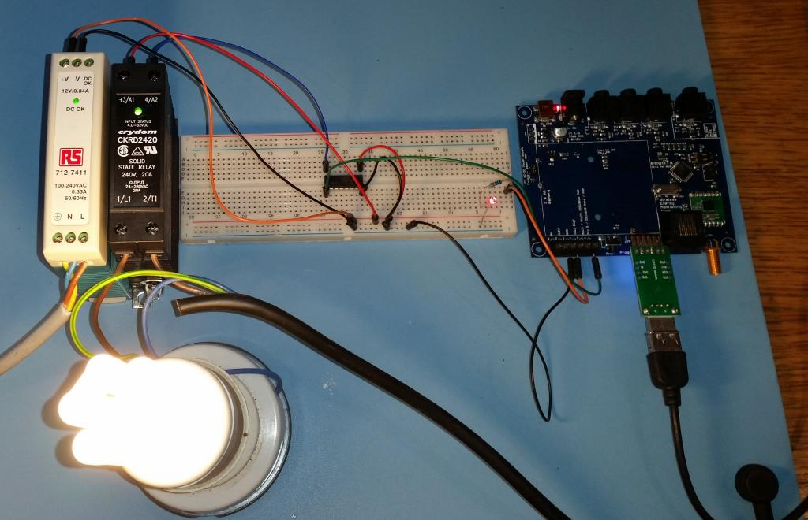
The light bulb goes on and off as the emonTx's Dig5 output goes high and low. And the red LED glows according to the pulse width on Dig3. That's basically what I need. The Crydom CKRD2420 shows not the slightest sign of warmth while all this is going on. Of course I'm only driving an 11 W lightbulb, but the Crydom is rated to 240 V / 20 A, so it should be happy to drive a 3 kW immersion heater.
The chip in the middle of the breadboard is the ULN2003A. This seems to be the recognized way of driving a relay from an Arduino. As I understand it, it works like this: the + input (terminal 3) on the relay is always going to be +12 V in my set-up (I've wired it direct to the power supply). The +12 V power supply is also wired to the "COM" input (pin 9) of the ULN2003A. Now, if an input to the ULN2003A is low, then the corresponding output from the ULN2003A will be +12 V. That output goes to the other input (terminal 4) of the relay, and while both relay inputs are at +12 V there is no potential difference so the relay remains open. If the input to the ULN2003A is driven high, then the corresponding output drops to ground. The relay then sees a potential difference of 12 V across its control inputs, and closes, with the result that the light bulb lights up.
Never has a light bulb going on and off seemed so entertaining! I could watch it for hours.
The 12 V power supply and the Crydom CKRD2420 will be part of the finished solution. The red LED (and its resistor), which are driven by analogWrites to Dig3, will be replaced by the op-amp circuit so as to boost this output to 0-10 V. That is the next thing that I will try.